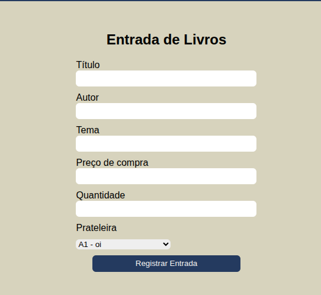
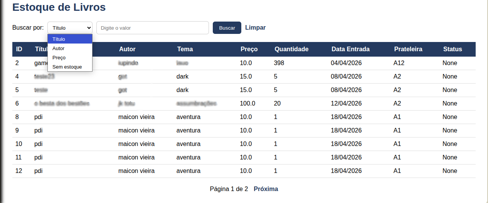

Controle de estoque
VISÃO GERAL
O controle de estoque no BookCase foi desenvolvido de maneira que o controle de livros e produtos seja feito de maneira rápida, simples e intuitiva. Nele é possível cadastrar itens, atualizar informações, consultar disponibilidade e acompanhar o acervo.
Esta página reune manuais rápidos e explicações sobre cada tela e funcionalidade disponivel.
FUNCIONALIDADES
Utilize a lista abaixo para acessar rapidamente a documentação de cada tela do sistema.
CADASTRO E MANIPULAÇÃO DE LIVROS
Funções disponíveis:
A maior parte do controle de livros será realizado na aba Livros.

Funções disponíveis:
- Entrada de livos
- Listar livros
A entrada de livros será onde a entrada de novos livros no estoque devem ser realizadas. Os livros devem possuir os campos no formulário obrigatóriamente preenchidos, sendo a prateleira, o único que deve ser devidamente parametrizado anteriormente, o qual o passo a passo se encontra aqui

Na tela de listagem de livros é onde pode se realizar a busca por determinados livros, tanto para consulta de disponibilidade quanto para edição dos mesmos.
Os livros podem ser filtrados por
- Sem estoque
- Título
- Autor
- Preço

LISTAGEM DE LIVROS
A listagem de livros mostra todos os itens cadastrados no sistema.
Nesta tela você pode:
- Pesquisar livros;
- Consultar disponibilidade;
- Editar informações;
- Visualizar preços;
- Controlar entradas e saídas.
CATEGORIAS
O sistema permite organizar os livros utilizando categorias personalizadas.
Isso facilita pesquisas, organização interna e localização rápida de itens no estoque.
CADASTRO DE PRODUTOS
Além de livros, o BookCase também permite cadastrar outros produtos vendidos pelo sebo.
Exemplos:
- Marcadores;
- Quadrinhos;
- Mangás;
- Itens colecionáveis;
- Revistas.
DÚVIDAS COMUNS
O livro desapareceu da listagem. O que fazer?
Verifique se o item foi marcado como indisponível ou removido do estoque.
Posso editar um livro já cadastrado?
Sim. Basta acessar a listagem de livros e selecionar a opção de edição.